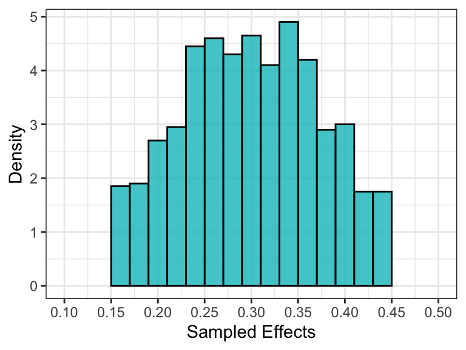
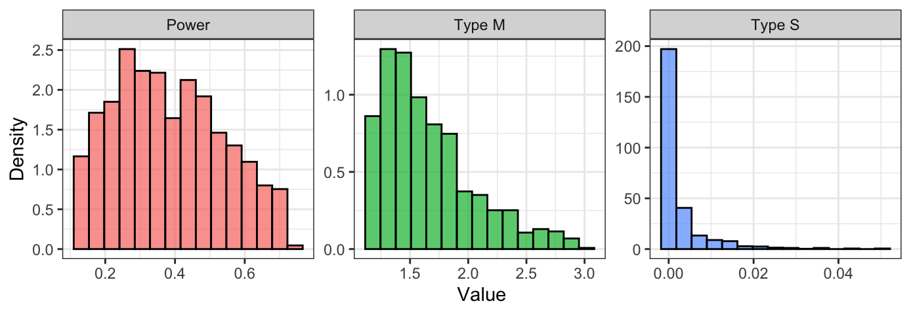

Given the hypothetical population effect size and the study sample size, the function retrospective() performs a retrospective design analysis. Retrospective design analysis allows to evaluate the inferential risks associated with a study design when the data have already been collected. Function arguments are:
retrospective(effect_size, sample_n1, sample_n2 = NULL,
test_method = c("pearson", "two_sample", "welch",
"paired", "one_sample")
alternative = c("two_sided","less","greater"),
sig_level = .05, ratio_sd = 1, B = 1e4,
tl = -Inf, tu = Inf, B_effect = 1e3,
display_message = TRUE, seed = NULL)Complete arguments description is provided in the function documentation ?retrospective. In the following sections, instead, different examples are presented. For further details about design analysis see Altoè et al. (2020) and Bertoldo, Zandonella Callegher, and Altoè (2020).
To conduct a retrospective design analysis considering a correlation between two variables, we need to specify test_method = "pearson" (default options). Note that, only Pearson’s correlation is available, while the Kendall’s \(\tau\) and Spearman’s \(\rho\) are not implemented.
Consider a study that evaluates the correlation between two variables with a sample of 30 subjects. Suppose that according to the literature the hypothesized effect is \(\rho = .25\). We can evaluate the inferential risks related to the present study design setting the argument test_method = "pearson". The seed argument is used to obtain reproducible results.
retrospective(effect_size = .25, sample_n1 = 30, test_method = "pearson", seed = 2020) #> #> Design Analysis #> #> Hypothesized effect: rho = 0.25 #> #> Study characteristics: #> test_method sample_n1 sample_n2 alternative sig_level df #> pearson 30 NULL two_sided 0.05 28 #> #> Inferential risks: #> power typeM typeS #> 0.27 1.826 0.003 #> #> Critical value(s): rho = ± 0.361
In the output, we have the summary information about the hypothesized population effect, the study characteristics, and the inferential risks. We obtained a statistical power of almost 30% that is associated with a Type M error of around 1.80 and a Type S error of 0.003. That means, statistical significant results are on average an overestimation of 80% of the hypothesized population effect and there is a .3% probability of obtaining a statistically significant result in the opposite direction. Finally, the critical values (i.e., the minimum absolute effect size value that would result significant) are \(\rho = \pm.36\). Note that it is not necessary to specify sample_2 argument in the case of correlation and tests were conducted considering "two_sided" alternative hypothesis with a significance level of .05 (the default settings).
To conduct a retrospective design analysis considering means comparisons, we need to specify the appropriate t-test (i.e., One-sample, Paired, Two-sample, or Welch’s t-test) using the argument test_method. Arguments specifications for the different t-tests are presented in the following Table.
| Test | test_method |
Other required arguments |
|---|---|---|
| One-sample t-test | one_sample |
sample_n2 = NULL |
| Paired t-test | paired |
sample_n2 equal to sample_n1
|
| Two-sample t-test | two_sample |
sample_n2 |
| Welch’s t-test | welch |
sample_n2 and ratio_sd
|
Consider a study where the same group (\(n = 25\)) was measured twice (e.g., pre- and post-test). Knowing from the literature that we would expect an effect size of \(d = .35\), which are the inferential risks related to the present study design? We can use the function retrospective() specifying the corresponding arguments. We use the option test_method = one_sample for paired t-test and set the same value for sample_n1 and sample_n2.
retrospective(effect_size = .35, sample_n1 = 25, sample_n2 = 25, test_method = "paired", seed = 2020) #> #> Design Analysis #> #> Hypothesized effect: cohen_d = 0.35 #> #> Study characteristics: #> test_method sample_n1 sample_n2 alternative sig_level df #> paired 25 25 two_sided 0.05 24 #> #> Inferential risks: #> power typeM typeS #> 0.391 1.589 0.001 #> #> Critical value(s): cohen_d = ± 0.413
In this case, we obtained a statistical power of almost 40% that is associated with a Type M error of around 1.60 and a Type S error of 0.001. That means, statistical significant results are on average an overestimation of 60% of the hypothesized population effect and there is a .1% probability of obtaining a statistically significant result in the opposite direction. Finally, the critical values (i.e., the minimum absolute effect size value that would result significant) are \(d = \pm 0.413\).
Consider a case where two groups (e.g., treatment and control group) with respectively 25 and 35 subjects were compared. Again, we hypothesize an effect size of \(d = .35\), but this time we specify a one-sided alternative hypothesis and a significance level of .10. We can do that using respectively the arguments alternative and sig_level.
retrospective(effect_size = .35, sample_n1 = 25, sample_n2 = 35, test_method = "two_sample", alternative = "great", sig_level = .10, B = 1e5, seed = 2020) #> #> Design Analysis #> #> Hypothesized effect: cohen_d = 0.35 #> #> Study characteristics: #> test_method sample_n1 sample_n2 alternative sig_level df #> two_sample 25 35 greater 0.1 58 #> #> Inferential risks: #> power typeM typeS #> 0.518 1.579 0 #> #> Critical value(s): cohen_d = 0.339
The option test_method = "two_sample" is used to consider a two-sample t-test and B = 1e5 increases the number of replication for more accurate results. We obtained a statistical power of around 50% that is associated with a Type M error of almost 1.60. Note that in the case of one-sided tests, the type S error will be always 0 or 1 depending on whether the hypothesized effect is coherent with the alternative hypothesis. Finally, the critical value is \(d = .34\).
Consider again the previous example, but this time we do not assume homogeneity of variance between the two groups. We suppose, instead, that the ratio between the standard deviation of the first group and of the second group is 1.5. In this case the appropriate test is the Welch’s t-test. We set the option test_method = "welch" and specify the argument ratio_sd.
retrospective(effect_size = .35, sample_n1 = 25, sample_n2 = 35, test_method = "welch", ratio_sd = 1.5, alternative = "great", sig_level = .10, B = 1e5, seed = 2020) #> #> Design Analysis #> #> Hypothesized effect: cohen_d = 0.35 #> #> Study characteristics: #> test_method sample_n1 sample_n2 alternative sig_level df #> welch 25 35 greater 0.1 38.89 #> #> Inferential risks: #> power typeM typeS #> 0.5 1.648 0 #> #> Critical value(s): cohen_d = 0.352
We obtained a statistical power of 50%, which is associated with a Type M error of almost 1.65, and the critical value is \(d = .35\). Results are really close to the previous ones with a slightly higher Type M error.
Defining the hypothetical population effect size as a single value could be limiting. Instead, researchers may prefer to use a probability distribution representing their uncertainty regarding the hypothetical population effect. Note that this could be interpreted as a prior distribution of the population effect in a Bayesian framework.
To define the hypothetical population effect size (effect_size) according to a probability distribution, it is necessary to specify a function that allows sampling values from a given distribution. The function has to be defined as function(n) my_function(n, ...), with only one single argument n representing the number of samples. For example, function(n) rnorm(n, mean = 0, sd = 1) would allow to sample from a normal distribution with mean 0 and standard deviation 1; or function(n) sample(c(.1,.3,.5), n, replace = TRUE) would allow to sample form a set of three equally plausible values. This allows users to define hypothetical effect size distribution according to their needs.
Argument B_effect defines the number of sampled effects. Increase the number to obtain more accurate results, although this will require more computational time (default is B_effect = 1000). To avoid long computational times when using a function to define the hypothetical population effect size, we suggest adjusting B (i.e., the number of simulation per each effect).
Optional arguments tl and tu allow truncating the sampling distribution defining the lower truncation point and upper truncation point respectively. Specifying truncation points is recommended as it allows avoiding unreasonable results in the case of unbounded distributions (i.e., too large effects, effects close to zero, or effects in the opposite direction from the expected ones). Note that if effect_type = "correlation", distribution is automatically truncated between -1 and 1.
Consider the same scenario as in the correlation example (Example 1). This time we define the hypothesized effect size according to a normal distribution with mean .30 and standard deviation .10. Moreover, to avoid unreasonable values we truncate the distribution between .15 and .45. The argument display_message = TRUE (default) allows to print the progress bar. Note that the progress bar is available only when effect_size is defined as a function.
retrospective(effect_size = function(n) rnorm(n, .3, .1), sample_n1 = 30, test_method = "pearson", tl = .15, tu = .45, B_effect = 1e3, B = 1e3, display_message = TRUE, seed = 2020) #> Truncation could require long computational time #> #> Design Analysis #> #> Hypothesized effect: rho ~ rnorm(n, 0.3, 0.1) [tl = 0.15 ; tu = 0.45 ] #> n_effect Min. 1st Qu. Median Mean 3rd Qu. Max. #> 1000 0.15 0.24 0.294 0.297 0.352 0.448 #> #> Study characteristics: #> test_method sample_n1 sample_n2 alternative sig_level df #> pearson 30 NULL two_sided 0.05 28 #> #> Inferential risks: #> Min. 1st Qu. Median Mean 3rd Qu. Max. #> power 0.106 0.250 0.3585 0.378520 0.496 0.741 #> typeM 1.140 1.363 1.5825 1.668918 1.892 2.935 #> typeS 0.000 0.000 0.0000 0.002595 0.003 0.077 #> #> Critical value(s): rho = ± 0.361
We adjusted B_effect and B to find a good trade-off between computational times and results accuracy. Differently from previous outputs, we have now a summary for the sampled effects distribution and for the inferential risks.
Currently there are no personalized plot functions in {PRDA}. However, it is easy to access all the results and use them to create the plots according to your needs. Here we present an example using {tidyverse} and {ggplot2}.
The function retrospective() returns a list with class "design_analysis" that contains:
design_analysis - a character string indicating the type of design analysis (prospective or retrospective).call_arguments - a list with all the arguments passed to the function.effect_info - a list with all the information regarding the considered hypothetical population effect size. In particular, in effect_samples we find the vector with the sampled effects (or unique value in the case of a single value).test_info - a list with all the information regarding the test performed.retrospective_res - a data frame with the results of the design analysis (i.e., power, typeM, and typeS).Output complete description is provided in the function help page ?retrospective.
da_fit <- retrospective(effect_size = function(n) rnorm(n, .3, .1), sample_n1 = 30, test_method = "pearson", tl = .15, tu = .45, B_effect = 1e3, B = 1e3, display_message = FALSE, seed = 2020) #> Truncation could require long computational time str(da_fit, max.level = 1) #> List of 5 #> $ design_analysis : chr "retrospective" #> $ call_arguments :List of 14 #> $ effect_info :List of 6 #> $ test_info :List of 7 #> $ retrospective_res:'data.frame': 1000 obs. of 3 variables: #> - attr(*, "class")= chr [1:2] "design_analysis" "list"
Note that the inferential risks associated to the i value of the vector effect_samples are reported in the i row of retrospective_res dataframe. Thus, we can simply add effect_samples as a new column of the dataframe.
data_plot <- da_fit$retrospective_res %>% mutate(effect = da_fit$effect_info$effect_samples)
Plotting the distribution of sampled effects, we can evaluate whether they accurately represent the intended distribution. If not, we could increase the number of sampled effects (B_effect).
ggplot(data_plot)+ geom_histogram(aes(effect, y = ..density..), col = "black", fill = "#00BFC4", alpha = .8, breaks=seq(.15,.45,.02))+ scale_x_continuous(breaks = seq(.1,.5,.05), limits = c(.1,.5))+ labs(x = "Sampled Effects", y = "Density")+ theme_bw()

We can also plot the distributions of Power, Type M error, and Type S error.
data_plot %>% pivot_longer(cols = c("power", "typeM", "typeS"), names_to = "Criteria", values_to = "Value") %>% mutate(Criteria = recode(Criteria, power = "Power", typeM = "Type M", typeS = "Type S")) %>% ggplot(aes(x = Value, y = ..density.., fill = Criteria)) + geom_histogram(col = "black", alpha = .7, bins = 15) + facet_wrap(.~ Criteria, scales = "free") + labs(y = "Density") + theme_bw() + theme(legend.position = "none")

Altoè, Gianmarco, Giulia Bertoldo, Claudio Zandonella Callegher, Enrico Toffalini, Antonio Calcagnì, Livio Finos, and Massimiliano Pastore. 2020. “Enhancing Statistical Inference in Psychological Research via Prospective and Retrospective Design Analysis.” Frontiers in Psychology 10. https://doi.org/10.3389/fpsyg.2019.02893.
Bertoldo, Giulia, Claudio Zandonella Callegher, and Gianmarco Altoè. 2020. “Designing Studies and Evaluating Research Results: Type M and Type S Errors for Pearson Correlation Coefficient.” Preprint. PsyArXiv. https://doi.org/10.31234/osf.io/q9f86.
Gelman, Andrew, and John Carlin. 2014. “Beyond Power Calculations: Assessing Type S (Sign) and Type M (Magnitude) Errors.” Perspectives on Psychological Science 9 (6): 641–51. https://doi.org/10.1177/1745691614551642.